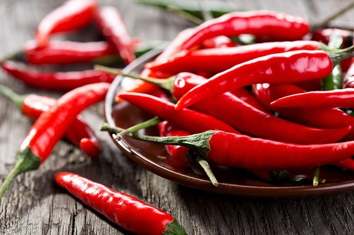

CABAI
Cabai memiliki nama latin capsicum annum L yang merupakan salah satu komoditas sayuran dan banyak
dibudidayakan oleh para petani di Indonesia.
Cabai memiliki nilai jual yang cukup tinggi serta memiliki beberapa manfaat bagi kesehatan manusia
salah satunya yakni zat capsaicin yang berfungsi untuk mengendalikan penyakit kanker.